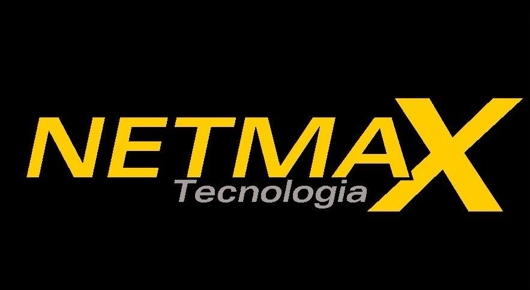
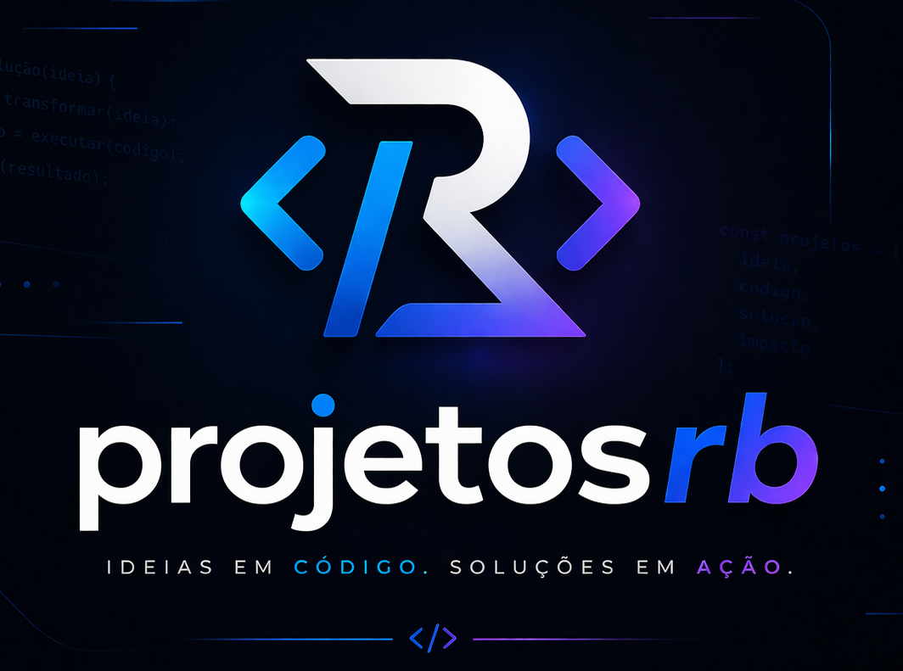

projetosrb
IDEIAS EM CÓDIGO. SOLUÇÕES EM AÇÃO.
{ ideias: true, código: 'limpo', resultado: 'real' }
Cartilha Pedagógica
🎓 1º ao 5º Ano · Pensamento Criativo
Introdução ao Scratch para Professores da Educação Básica (1º ao 5º Ano)
Material didático interativo e acessível.
🔗 Acessar projeto
Material didático interativo e acessível.
Cartilha Pedagógica
🧠 6º ao 9º Ano · Pensamento Computacional
Uma sequência didática para desenvolver o Pensamento Computacional do 6º ao 9º ano
Estratégias práticas com Scratch.
🔗 Acessar projeto
Estratégias práticas com Scratch.

Netmax Fibra
🌐 Reconstrução completa
Reconstrução completa do portal institucional da Netmax Fibra
Experiência moderna, performance e design responsivo.
🔗 Acessar projeto
Experiência moderna, performance e design responsivo.

Sobre Mim
👤 Institucional · Criador
Conheça a trajetória, formação acadêmica e filosofia de trabalho
de Rodrigo Barbosa, idealizador do projetosrb.
👤 Conhecer criador
de Rodrigo Barbosa, idealizador do projetosrb.
Novos Horizontes
🚀 Em breve · inovação
Reservado para projetos futuros
Novas soluções, tecnologias emergentes e ideias em evolução.
Novas soluções, tecnologias emergentes e ideias em evolução.